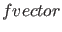

Next: Continuation of codim 1 Up: Continuation of limit cycles Previous: Adaptive control example Contents
The phase response curve of a limit cycle, or PRC, is a curve, defined over the period of the cycle, that expresses, at each time of that period, the effect of a small input vector on the cycle. In experimental circumstances, this may correspond to injected current, to the addition of more chemical agents, etc. A positive value means that the current cycle is shortened in time, a negative value means that the period is prolonged.
The PRC, as it is generally computed, is exact for infinitesimally small input vectors. In practice the maximum norm of the input vector would depend on the needed accuracy and the values of the system's state variables.
The derivative phase response curve or dPRC also has some very important applications.
For the concrete use of PRC and dPRC in synchronization studies in neural modeling,
we refer to [23].
CL/SMALL>_MATCONT supports the computation of the PRC and dPRC of limit cycles during continuation, using the method described in [24]. The standard method, which uses numerical integration
of the adjoint system, was implemented in XPPAUT [17].
The use in MATCONT is easy: before starting the actual limit cycle continuation, the user can specify whether he wants to compute the PRC, dPRC or both, and he needs to indicate the input vector used. When a scalar is given as input, then the vector has this scalar as first entry and all other entries are zero. Then in separate plotting windows, for each computed step in limit cycle continuation, the PRC and/or dPRC are computed and plotted. The computed values are saved in the output f-array of the continuation.
To illustrate the use in CL_MATCONT, we here supply code that does a LC continuation experiment in the Morris Lecar system (the odefile is called MyML.m and is located in the directory Testruns/TestSystems), and also computes the PRC and dPRC of the system:
clear
global x v s h f opt
OPTIONS=[];
hls = MyML;
[t,y] = ode45(hls{2},[0 1000],[0 0],OPTIONS,30,10);
x0 = y(end,:)';
opt=contset;opt=contset(opt,'Singularities',1);
opt = contset(opt,'MaxStepsize',10);
opt=contset(opt,'MaxNumpoints',2500);
[x1,v1]=init_EP_EP(@MyML,x0,[30;6],[1]);
[x,v,s,h,f]=cont(@equilibrium,x1,[],opt);
x1=x(1:2,s(5).index);p=[x(end,s(5).index);6];
[x0,v0]=init_H_LC(@MyML,x1,p,[1],1e-6,40,4);
opt = contset(opt,'Multipliers',0);
opt = contset(opt,'Adapt',1);
opt = contset(opt,'MaxStepsize',5);
opt = contset(opt,'FunTolerance',1e-6);
opt = contset(opt,'VarTolerance',1e-6);
opt = contset(opt,'PRC',1);
opt = contset(opt,'dPRC',1);
opt = contset(opt,'Input',1);
opt = contset(opt,'MaxNumPoints',100);
[xlc2,vlc2,slc2,hlc2,flc2]=cont(@limitcycle,x0,v0,opt);
fvector=flc2(:,100);
PRC10=fvector(42:202);
dPRC10=fvector(203:363);
plot(PRC10,'r');
hold on
plot(dPRC10,'b');
We note that the first 41 components (number of test intervals plus one) of the  contain the coarse mesh points of the discretization. The next 161 components (number of fine mesh points, i.e. number of test intervals times number of collocation points plus 1) contain the values of the PRC in the fine mesh points. The next 161 components contain the values of the dPRC in the fine mesh points.
This script is in the MATCONT directory Testruns under the name testmymlPRC. The output is:
>> testmymlPRC first point found tangent vector to first point found label = H , x = ( -28.700773 0.018189 43.312018 ) First Lyapunov coefficient = 6.461827e-03 label = LP, x = ( -26.127744 0.024296 43.740592 ) a=9.306236e-03 label = LP, x = ( -10.804133 0.126584 34.546930 ) a=-2.105189e-03 label = H , x = ( 7.947868 0.555741 197.796289 ) First Lyapunov coefficient = 8.882425e-04 Current step size too small (point 1134) elapsed time = 2.6 secs npoints curve = 1134 first point found tangent vector to first point found Limit point cycle (period = 2.254127e+01, parameter = 2.005306e+02) Normal form coefficient = -3.155002e-01 elapsed time = 79.9 secs npoints curve = 100
The code also produces Figure 14.
To further illustrate the computation of the PRC and the dPRC in CL_MATCONT, we here supply code that does a LC continuation experiment in the adaptx system (the odefile is called adaptx.m and is located in the directory Testruns/TestSystems), and also computes the PRC and dPRC of the system:
[x0,v0]=init_EP_EP(@adaptx,[0;0;0],[-10;1],[1]); opt=contset;opt=contset(opt,'Singularities',1); [x,v,s,h,f]=cont(@equilibrium,x0,[],opt); x1=x(1:3,s(2).index);p=[x(end,s(2).index);1]; [x0,v0]=init_H_LC(@adaptx,x1,p,[1],1e-6,20,4); opt = contset(opt,'MaxNumPoints',10); opt = contset(opt,'Multipliers',1); opt = contset(opt,'Adapt',1); [xlc,vlc,slc,hlc,flc]=cont(@limitcycle,x0,v0,opt); par=slc(end).data.parametervalues; [x1,v1] = init_LC_LC(@adaptx, xlc, vlc, slc(end), par, 1, 20, 4); opt = contset(opt,'PRC',1); opt = contset(opt,'dPRC',1); opt = contset(opt,'Input',1); opt = contset(opt,'MaxNumPoints',20); [xlc1,vlc1,slc1,hlc1,flc1]=cont(@limitcycle,x1,v1,opt); fvector=flc1(:,20); plot(fvector(22:102),'r') hold on plot(fvector(103:183),'b')
We note that the first 21 components (number of test intervals plus one) of the contain the coarse mesh points of the discretization. The next 81 components (number of fine mesh points, i.e. number of test intervals times number of collocation points plus 1) contain the values of the PRC in the fine mesh points. The next 81 components contain the values of the dPRC in the fine mesh points.
This script is in the MATCONT directory Testruns under the name testadaptPRC. The output is:
>> testadaptPRC first point found tangent vector to first point found label = H , x = ( 0.000000 0.000000 0.000000 1.000002 ) First Lyapunov coefficient = -3.000001e-01 elapsed time = 0.5 secs npoints curve = 300 first point found tangent vector to first point found Limit point cycle (period = 6.283185e+00, parameter = 1.000000e+00) Normal form coefficient = -1.306303e+00 Branch Point cycle(period = 6.283185e+00, parameter = 9.999996e-01) elapsed time = 13.3 secs npoints curve = 10 first point found tangent vector to first point found elapsed time = 6.5 secs npoints curve = 20
The code also produces Figure 15.